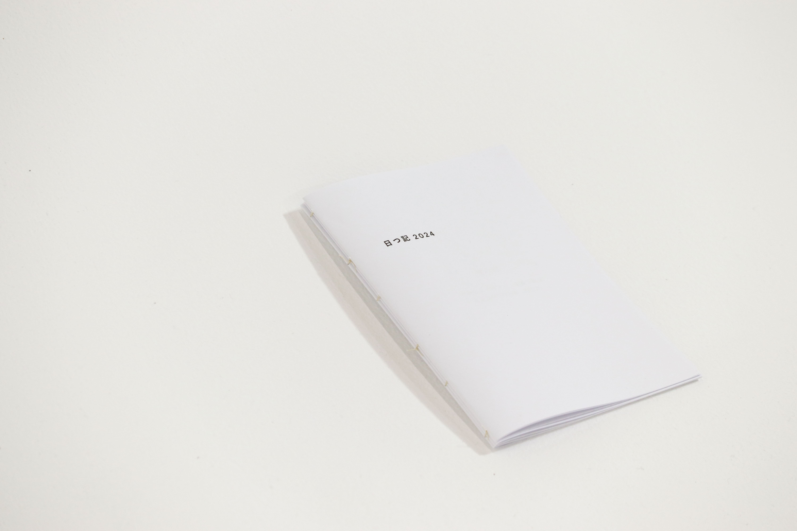
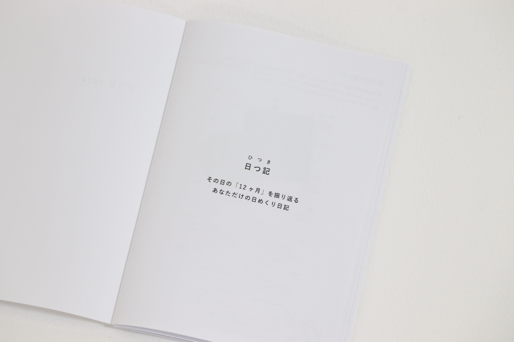
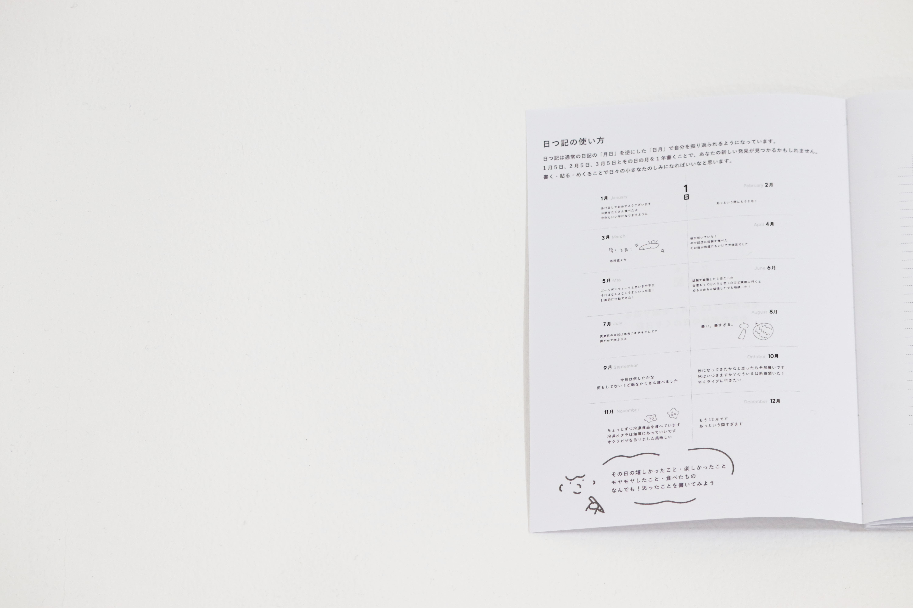
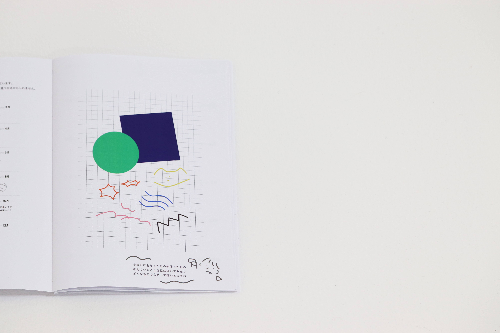
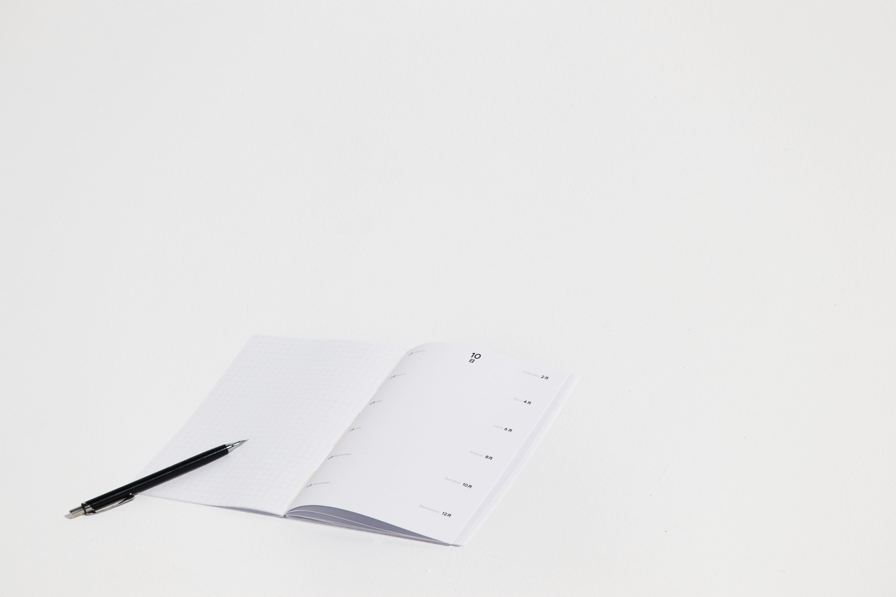
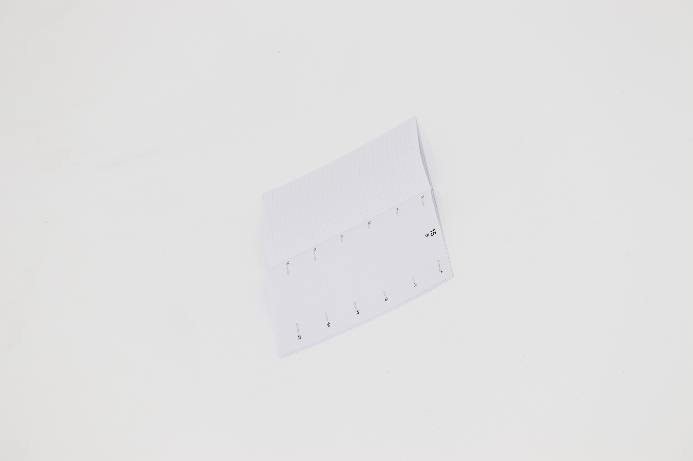

日つ記
月日を逆に、その日の12ヶ月を振り返る日記

歳を重ねるにつれて日々の流れをとても早く感じるようになります。 どんな自分だったのか、少しでも忘れないように1年間の思い出と「日」を振り返られるものを作ろうと考えました。
1月5日、2月5日、3月5日と、1年間の同じ日を月ごとに見返し、自分の変化や出来事を記録・貼っていきます。
日々の忙しさの中にも季節や時の違いを一度に感じられる、自分自身と向き合う大切な時間になりますように
使い方

その日に起きたことや感じたこと、料理や使ったものなど
どんなことでもOK!なんでも書いてみよう

今日1日で見つけたり貰ったり描いたものを貼ってみよう

1年間の同じ日のそれぞれの月を記録して見比べることで
自分の新たな発見や成長が見えてくるかもしれません！
日記を使うと…
手でめくる、手で書くことで
脳全体が活性化し記憶が頭に残りやすくなります。
そして毎日継続することで「続けられた！」と達成感を感じ自分の小さな自信につながります。

その時にしかない気持ちが文字で伝わるかもしれません
同じ日の月それぞれ何をしていたのか知ることで
あなたの成長や反省など振り返ってみましょう
この日記に、嬉しい・楽しい・モヤモヤ・ヘトヘト
どんなことでも自由に書いて貼って
あなただけの日つ記に。
自分の小さなお守りになりますように